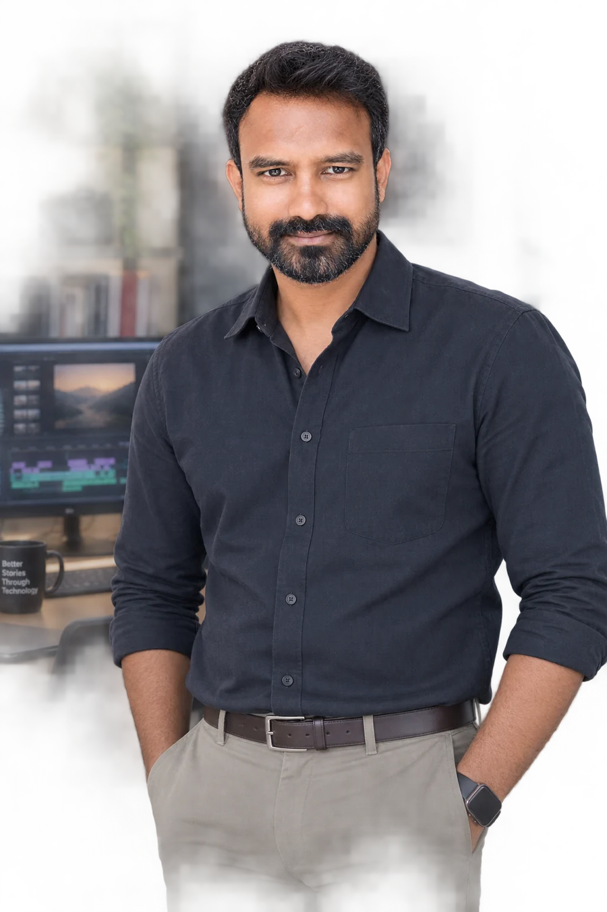
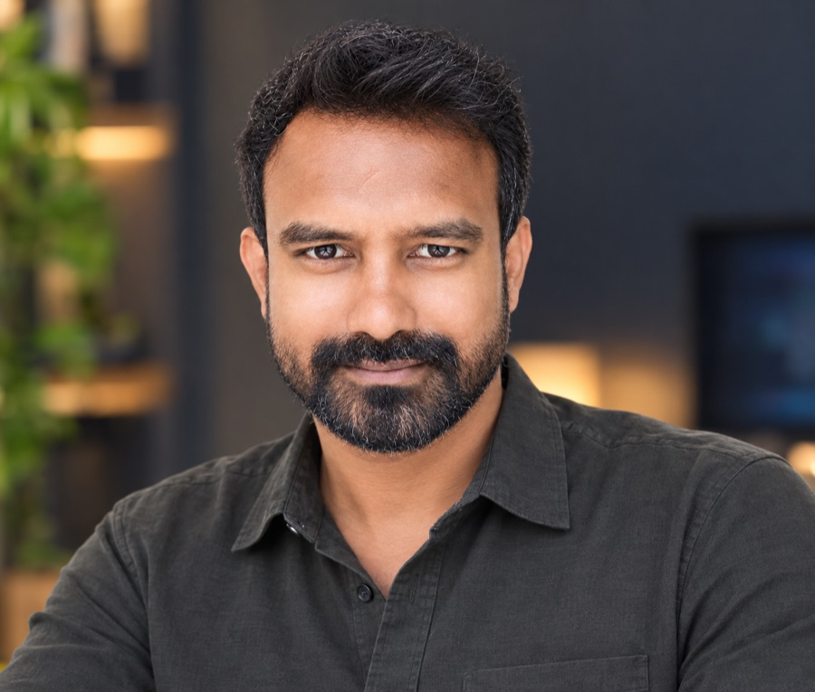

Mahashivratri — Global Live
Complete video editing, promotional content and event glimpses for one of the most-watched live spiritual events on the planet — broadcast globally to millions of viewers.
EditingPromosLive Event

Coimbatore, Tamil Nadu · India
Media production professional with 15+ years across broadcast television, film and digital — now cutting with AI in the pipeline.
I started on film sets as an Assistant Director and worked my way up — through reality TV at Zee Tamizh, breaking-news coverage at News 7 Tamil, and global spiritual broadcasts at Isha Foundation — all the way to heading media production at leading networks.
Along the way I've owned on-air promo production, studio operations (PCR/ACR, MCR, ICR), broadcast post-production, and large-scale live event coverage — maintaining broadcast-grade quality on every deliverable.
Now I'm integrating full stack development and a modern AI toolkit — ElevenLabs, HeyGen, HiggsField, Remotion and Claude — into production pipelines, shipping web applications and programmatic video at scale through my studio, Branova.
Complete video editing, promotional content and event glimpses for one of the most-watched live spiritual events on the planet — broadcast globally to millions of viewers.
Promotional videos and campaign edits for Project GreenHands, Rally for Rivers, Cauvery Calling and Youth & Truth — large-scale national initiatives spanning digital and broadcast platforms.
From editing breaking-news events — the South India Floods and Tamil Nadu Legislative Election — to producing on-air promos, then supervising studio operations, PCR/ACR, MCR, ingest and live programs as Head of Production.
Founded Branova to ship full stack web applications and programmatic video pipelines — integrating ElevenLabs, HeyGen, HiggsField and Remotion, with Claude for AI-assisted development, from concept to deployment.
Senior video editor on the promotional ads team — reviewing and signing off every edit before it ships, managing a small team of editors, and writing the training and onboarding material they work from. Also on the hiring side: screening and interviewing new editors as the team grows.
House of EdTech · Kolkata
Reviewing edits for quality and brand consistency, managing a small editing team, building the training and onboarding material, and interviewing new editors.
Branova · Coimbatore
Building and shipping full stack web apps and programmatic video pipelines for clients, with AI woven through the workflow end-to-end.
Trends & Tactics · Chennai
End-to-end video production for digital campaigns, plus managing website development projects and client coordination.
News 7 Tamil · Chennai
Supervised all video production — studio activities, PCR/ACR, MCR, ICR (ingest), news presenters and live/special programs — plus broadcast motion graphics.
News 7 Tamil · Chennai
Conceptualized and produced on-air promos and special features from brief to final delivery — creative direction, scripting and execution.
Isha Foundation · Coimbatore
Editing, promos and event glimpses for Mahashivratri and national initiatives reaching millions across digital and broadcast.
News 7 Tamil · Chennai
Covered and edited breaking-news events including the South India Floods (2015) and the Tamil Nadu Legislative Election (2016).
Zee Network — Zee Tamizh · Chennai
Edited reality shows and entertainment content for Zee Tamizh broadcast.
Independent · Tamil Film Productions · Chennai
AD on multiple Tamil feature films — scene breakdown, shot listing, crew coordination and continuity across productions.
Time Frames Production · Chennai
Assisted direction on Star Vijay television projects — foundational storytelling, scene breakdown and production scheduling.
15th Atlas-Kerala Film & Television Critics Award (2013) — for the telefilm "Nilavurangu Nila".
News 7 Tamil — recognized for outstanding shoot coordination, studio handling, promo editing and leadership on the production floor.
PSG College of Arts & Science, Coimbatore · 2006 — 2009.

Seeking a production leadership role
Fifteen years on the floor and in the bay — studio operations, live events, on-air promos and post — and the teams that delivered them, at networks reaching audiences in the hundreds of millions. I'm looking for a role where that scale compounds: owning creative direction, holding the quality bar, and building the editors and crew who do the work.